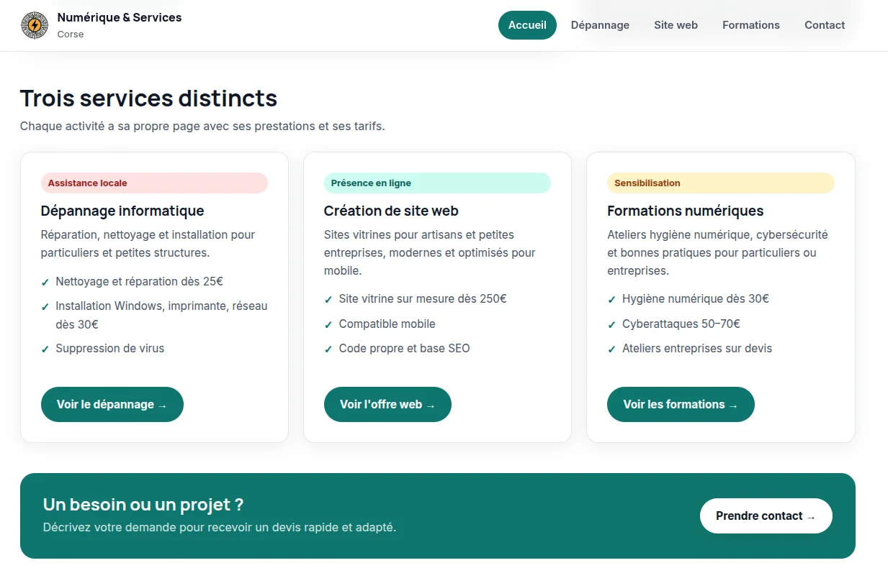
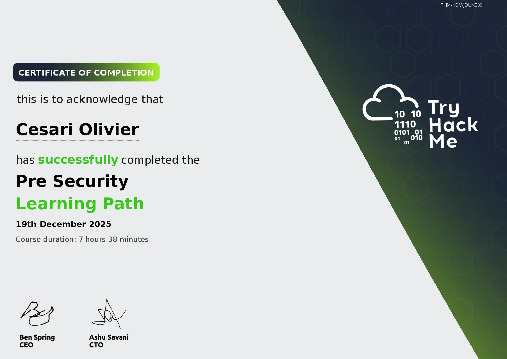

BTS SIO · Option SISR · Projets techniques
Des réalisations pour
éprouver l’infrastructure.
Ma formation m’amène à concevoir, déployer, documenter et superviser des environnements systèmes et réseaux. Voici les projets académiques, professionnels et personnels qui illustrent mes compétences.
Lab personnel / Architecture & Virtualisation
Mon Home Lab
Un banc d'essai complet à domicile pour expérimenter l'auto-hébergement, la virtualisation Proxmox VE, la segmentation réseau et la résilience du stockage.
RJ45 1GbE
SERVEUR HÔTE & STOCKAGE
Mini-PC · Hyperviseur Proxmox VE
Virtualisation de machines d'apprentissage et services réseau
CAPACITÉ AJOUTÉE
~4 To
SERVICE AUTO-HÉBERGÉ
Nextcloud Hub
Synchronisation de fichiers sécurisée, accès distant et sauvegardes régulières.
ENVIRONNEMENTS DE TEST
VM Kali Linux & Windows
Laboratoires d'expérimentation isolés pour l'audit et l'administration système.
Vue d’ensemble synthétique. La segmentation réseau et le plan d'adressage IP privé sont gérés localement.
Proxmox VE
Installation bare-metal, gestion fine des ressources RAM/CPU et snapshots avant mises à jour.
Nextcloud
Déploiement d'une solution de cloud privé pour centraliser la documentation et les sauvegardes.
VMs de lab
Cloisonnement d'environnements Kali Linux pour les exercices CTF et Windows pour les tests AD.
Stockage 4 To
Extension de la capacité de stockage et mise en place de politiques de sauvegarde.
01
RÉSEAUX & SYSTÈMES
PROJET ACADÉMIQUE 2026
PROJET ACADÉMIQUE 2026
Concevoir, segmenter & déployer
Modernisation d’une infrastructure réseau L2/L3
Maquettage complet d'une refonte réseau d'établissement sous Packet Tracer, découpage en VLANs, routage inter-VLAN et déploiement de postes sous SambaEdu4.
Voir le détail des réalisations
Contexte & Travail réalisé
Pour répondre aux besoins de modularité et de sécurité d'un parc pédagogique, j'ai conçu et validé une maquette réseau complète sur Cisco Packet Tracer :
- Segmentation VLAN (802.1Q) : Séparation étanche des flux administratifs, enseignants, élèves et serveurs.
- Routage L3 & Services IP : Configuration du routage inter-VLAN (Router-on-a-stick / commutateurs L3), relais DHCP (IP helper-address) et résolveurs DNS.
- Déploiement SambaEdu4 : Préparation et intégration de postes clients au domaine SambaEdu4 pour la gestion centralisée des sessions utilisateurs.
- Recette & Documentation : Rédaction du cahier de tests, vérification de l'isolation des réseaux et des politiques de filtrage.
Compétences & Outils
02
CARTOGRAPHIE & DCIM
PROJET ACADÉMIQUE 2026
PROJET ACADÉMIQUE 2026
Cartographier, référencer & documenter
Inventaire et cartographie du parc avec NetBox
Modélisation centralisée du parc matériel, des baies de brassage, des plages d'adressage IP et des interconnexions au sein de l’outil IPAM/DCIM NetBox.
Voir le détail des réalisations
Contexte & Travail réalisé
Face à la dispersion des données d'inventaire sur des feuilles de calcul statiques, l'objectif était d'instaurer une "Source Unique de Vérité" (Single Source of Truth) :
- Gestion IPAM : Découpage et modélisation hiérarchique des sous-réseaux IPv4 (/24, /26, adresses réservées, passerelles, passerelles VRRP).
- Gestion DCIM : Définition des sites, pièces, racks 19 pouces, positions en unité U et équipements actifs (switches, routeurs, serveurs).
- Câblage & Liaisons : Renseignement des liaisons cuivre/fibre entre baies et brassage vers les prises murales.
- Bénéfice immédiat : Accélération drastique du diagnostic d'incident et planification facilitée des extensions réseau.
Outils & Notions
03
SYSTÈMES & AUTOMATISATION
PROJET ACADÉMIQUE 2026
PROJET ACADÉMIQUE 2026
Scripter, fiabiliser & gagner du temps
Automatisation du provisionnement de services sous Linux
Conception de scripts shell Bash pour automatiser le déploiement et la configuration reproductible d'environnements web et de serveurs DNS.
Voir le détail des réalisations
Contexte & Travail réalisé
Afin de limiter les erreurs humaines lors de déploiements répétés et d'accélérer la mise en service de nouveaux hôtes de test :
- Scripts Bash modulaires : Détection automatique de la distribution (Debian/Ubuntu), vérification des privilèges root, gestion des codes d'erreur et logs horodatés.
- Serveur Web & Hôtes virtuels : Installation automatisée des paquets (Apache/Nginx, modules, configuration des VirtualHosts et permissions d'accès).
- DNS BIND9 : Génération automatique des fichiers de zones directes et inverses, incrémentation du serial SOA et contrôle de syntaxe avec
named-checkconfetnamed-checkzone. - Reproductibilité : Réduction du temps de déploiement de 45 minutes à moins de 2 minutes par serveur.
Technologies mobilisées
04
EXPÉRIENCE PROFESSIONNELLE
STAGE SUR LE TERRAIN MAI — JUIN 2026
STAGE SUR LE TERRAIN MAI — JUIN 2026
CCI de Corse · Service Informatique
Technicien Réseaux & Systèmes
Immersion au sein d'une infrastructure d'entreprise multisite : déploiement matériel, unification de la commutation, gestion de parc et accompagnement des utilisateurs.
Voir le détail des réalisations
Missions & Réalisations concrètes
- Stacking de 3 commutateurs : Assemblage physique, interconnexion par modules dédiés, configuration de l'agrégation de liens et vérification du basculement en haute disponibilité.
- Déploiement & Configuration de GLPI : Installation du serveur, interfaçage avec l'annuaire, recensement des postes, imprimantes et matériels réseaux pour la gestion du cycle de vie du parc.
- Support de proximité N1/N2 : Prise en charge des sollicitations utilisateurs, résolution de pannes réseau, réinstallation de postes de travail et paramétrage des accès.
Environnement & Outils
05
PROJET ENTREPRENEURIAL
SERVICES NUMÉRIQUES DEPUIS 2026
SERVICES NUMÉRIQUES DEPUIS 2026
Entrepreneuriat & Relation client
Nova IT — Prestations informatiques & Digitalisation
Création d'une activité de services numériques : assistance technique de proximité, maintenance matérielle, création de sites vitrines et ateliers de sensibilisation.

Voir le détail des réalisations
Activités développées
- Dépannage & Maintenance : Diagnostic de pannes matérielles, réinstallation sécurisée d'OS, éradication de malwares et optimisation de postes de travail.
- Développement Web : Conception et mise en ligne du site novait.fr et de sites vitrines adaptés aux besoins de petites structures locales.
- Pédagogie & Sensibilisation : Accompagnement des utilisateurs aux réflexes de base face au phishing, gestion des mots de passe et sauvegardes.
Compétences transversales
Laboratoires & Veille continue
Pratique continue
en cybersécurité.
Je maintiens et développe mes réflexes d'investigation et d'audit sur des plateformes reconnues, avec des parcours d'apprentissage balisés.

PROFIL / 01 · ROOT-ME
OxyFifi
500+ points validés · CTF, Web, Réseau & Système
↗
PROFIL / 02 · TRYHACKME
RicinusCommunis
Parcours Pre Security validé · Cyber Security 101 en cours
↗
CERTIFICATION OFFICIELLE · OSCAR ZULU
Permis d'Osinter
Score : 38/40 (95%) · Vérifier l'attestation OZ-2026-AJC3UE
↗
OUTILS D'AUDIT PRATIQUÉS
Nmap · Wireshark · Burp Suite · Gobuster · Hydra · Environnement Exegol · Méthodes OSINT
Alternance & Contact